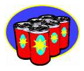

for Your Investments

|
for Your Investments |
|
The year 2002 was not a good one for Wall Street and the investors in the stock market. It was certainly a tough time for many people. Then I saw this clever joke on the internet.
|
JUST IN TIME: SENSIBLE INVESTMENT ADVICE
If you had bought $1000.00 worth of Nortel stock one year ago, it would now be worth $49.00. With Enron, you would have $16.50 of the original $1,000.00. With WorldCom, you would have less than $5.00 left. If you had bought $1,000.00 worth of Budweiser (the beer, not the stock) one year ago, drank all the beer, then turned in the cans for the 10 cent deposit, you would have $214.00. Based on the above, our current investment advice is to drink heavily and recycle. |
But, once my chuckles subsided, my math mind kicked in, thinking: Gee, I wonder if that's really true? I mean the part about earning $214.00 recycling the beer cans.
Then my teacher side took over. Wouldn't this make a nice middle school math problem? To verify the statement in the joke would require some research about the price of beer in various supermarkets or mini-marts, etc. Then there is the matter of the deposit one would receive by turning in the empty cans. Maybe it isn't 10 cents everywhere. And so forth.
Surely it would spark a lot of discussion.
And in the case it wouldn't be politically correct to discuss alcoholic beverages in the school classroom, well, it's simple to substitute one's favorite soft drink instead. In fact, a class could investigate different brands of colas. Afterall, it's essentially the math that's important here, and recycling the aluminum cans, not what was inside them originally, right?
|  |
Well, think about it, won't you? And report back to WTM what you discover, okay? Thanks.
| Comments? Send e-mail. | Back to top | Go back to Home Page | Go back to Contents |